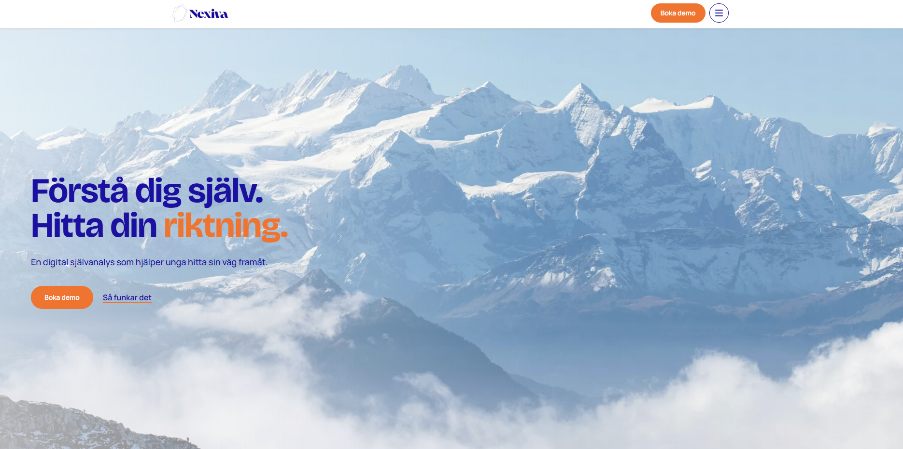

Nexiva AB. Webbdesign
Beskrivning
Under en tvådagars hackathon arbetade jag i ett team med designers och utvecklare för att ta fram ett nytt webbdesignkoncept för Nexiva AB, ett företag inom utbildningsteknik. Mitt fokus låg på att förbättra webbplatsens struktur, navigation och användarupplevelse.
Tidigare presenterades alla delar av tjänsten på en och samma startsida. I det nya konceptet skapade jag en tydligare struktur med separata vägar för elever, föräldrar och skolor. Målet var att göra innehållet enklare att förstå, hjälpa användare att hitta rätt och göra plattformens funktioner mer tillgängliga.
Före
Den ursprungliga webbplatsen samlade information om tjänstens olika delar på en och samma startsida. Det skapade en möjlighet att förbättra innehållsstrukturen och göra navigationen tydligare.

Efter
Jag tog fram ett nytt webbdesignkoncept med tydligare innehållshierarki och separata användarvägar för elever, föräldrar och skolor. Konceptet innehåller även ett förslag på en kostnadsfri bedömning som gör det enklare för nya användare att komma igång.